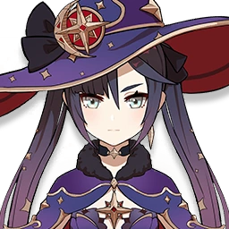
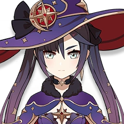

Hija de Frederica Gunnhildr y Seamus Pegg, la hermana mayor de Bárbara
y descendiente del prestigioso Clan Gunnhildr, Jean es la Gran Maestra
Intendente de los Caballeros de Favonius. Ella siempre está ocupada
manejando los disturbios en Mondstadt y, por supuesto, trabajando
incansablemente para mantener la Ciudad de la Libertad.
Talentos
Ataque Normal: Realiza hasta 5 ataques rápidos.
Ataque Cargado: Consume una cierta cantidad de
Aguante para desatar un ataque que contiene fuerza Anemo.
Ataque Descendente: Se lanza desde el aire para
golpear el suelo, dañando a los enemigos a lo largo del camino e
infligiendo Daño de Área en el momento del impacto.
Concentrando el poder del viento en su espada, Jean canaliza una
minitormenta, lanzando a los enemigos que se encuentran en la
dirección que apunta e infligiendo una gran cantidad de Daño
Anemo.
Mantener pulsado: Aguante para ordenar al
torbellino que atraiga a los enemigos cercanos frente a ella. La
dirección de atracción puede ajustarse. El personaje quedará
inmóvil mientras dure la habilidad.
Invoca la protección del viento para crear un Campo de diente de
león, empujando a los enemigos cercanos e infligiendo Daño
Anemo. Al mismo tiempo, cura de inmediato una gran cantidad de
Vida a todos los aliados y miembros del equipo. La cantidad
restaurada varía según el ATQ de Jean.
Al golpear, los Ataques Normales tienen un 50% de probabilidad
de curar a todos los miembros del grupo un 15% del ATQ de Jean.
Después de usar la Brisa de Dandelion regenera el 20% de la
Energía elemental.
Cuando se logra un "Perfecto" en un plato con efectos
reconstituyentes, hay un 12% de posibilidades de obtener el
doble de cantidad del producto.
Constelaciones
Aumenta la velocidad de atracción de Filo de ventisca al
mantener pulsado durante más de 1 s, y aumenta el daño que
inflige en un 40%.
Cuando Jean recoge un orbe o partícula elemental, aumenta la
Vel. de Ataque y la Vel. Movimiento de todos los miembros del
equipo en un 15% durante 15 s.
Aumenta el nivel de habilidad de
Brisa de Dandelion +3. Puede ser aumentado
hasta Niv. 15.
La RES Anemo de todos los enemigos dentro del área de
Brisa de Dandelion disminuye en un 40%.
Aumenta el nivel de habilidad de
Filo de ventisca +3. Puede ser aumentado hasta
Niv. 15.
Dentro del campo de Brisa de Dandelion, el daño
recibido disminuye en un 35%. Al salir de él, el efecto dura 3
ataques más o 10 s.


 
